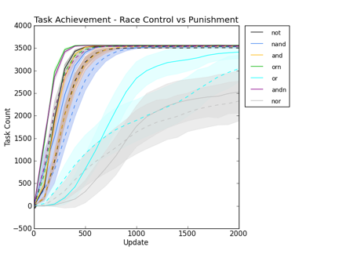
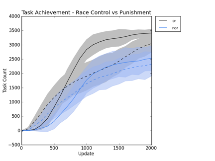
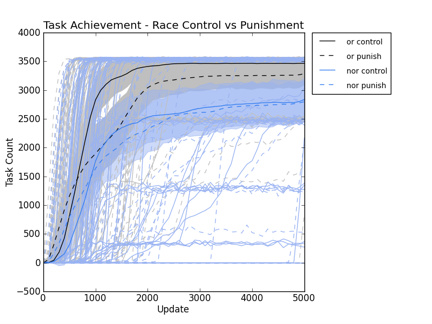
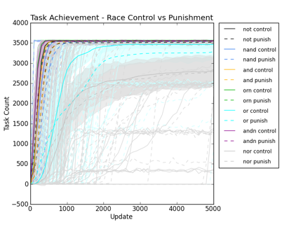
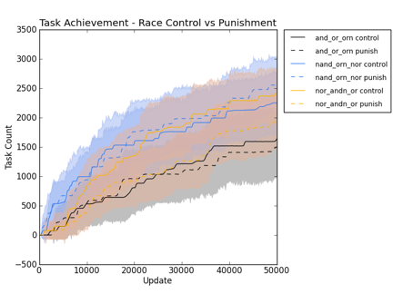

STATUS:
rosiec@atlantis:~/research/devolab_research/evolution_of_modularity/raw_data/088$ for i in and nand andn nor not or orn; do ls -1 *_$i"_"*control*/data/tasks.dat | xargs python ../../../scripts/common/extract_single_column_to_csv.py -s " " 2 > $i"_"control_tasks.csv; done
rosiec@Loki:/Volumes/rosiec/research/devolab_research/evolution_of_modularity/raw_data/088$ python ../../../scripts/graph_generation/plot_from_csv.py -o --calculate_error --xlim_max 20 --end_at 20 --x_tick_intervals 100 --title "Task Achievement - Race Control vs Punishment" --ylabel "Task Count" --xlabel "Update" --data_sources 2 --legend "not,nand,and,orn,or,andn,nor" tasks.png not_*.csv nand_*.csv and_*.csv orn_*.csv or_*.csv andn_*.csv nor_*.csv rosiec@Loki:/Volumes/rosiec/research/devolab_research/evolution_of_modularity/raw_data/088$ python ../../../scripts/graph_generation/plot_from_csv.py -o --calculate_error --xlim_max 20 --end_at 20 --x_tick_intervals 100 --title "Task Achievement - Race Control vs Punishment" --ylabel "Task Count" --xlabel "Update" --data_sources 2 --legend "or,nor" or_nor_only_tasks.png or_*.csv nor_*.csv


STATUS:
rosiec@Loki:/Volumes/rosiec/research/devolab_research/evolution_of_modularity/raw_data/088$ python ../../../scripts/graph_generation/plot_from_csv.py -o -a --error --end_at 50 --xlim_max 50 --xtick_multiplier 100 --title "Task Achievement - Race Control vs Punishment" --ylabel "Task Count" --xlabel "Update" --data_members 2 --legend "or control,or punish,nor control,nor punish" testing___or_nor_only_tasks.png or_control_tasks.csv or_punish_tasks.csv nor_control_tasks.csv nor_punish_tasks.csv

rosiec@Loki:/Volumes/rosiec/research/devolab_research/evolution_of_modularity/raw_data/088$ python ../../../scripts/graph_generation/plot_from_csv.py -o -a --error --end_at 50 --xlim_max 50 --xtick_multiplier 100 --title "Task Achievement - Race Control vs Punishment" --ylabel "Task Count" --xlabel "Update" --data_members 2 --legend "not control,not punish,nand control,nand punish,and control,and punish,orn control,orn punish,or control,or punish,andn control,andn punish,nor control,nor punish " testing___tasks.png not_*.csv nand_*.csv and_*.csv orn_*.csv or_*.csv andn_*.csv nor_*.csv

rosiec@atlantis:~/research/devolab_research/evolution_of_modularity/raw_data/088$ for i in and_or_orn nand_orn_nor nor_andn_or; do ls -1 *_$i"_"*control*/data/tasks.dat | xargs python ../../../scripts/common/extract_single_column_to_csv.py -s " " 4 > $i"_"control_tasks.csv; done
rosiec@Loki:/Volumes/rosiec/research/devolab_research/evolution_of_modularity/raw_data/089$ python ../../../scripts/graph_generation/plot_from_csv.py -o --error --xtick_multiplier 100 --title "Task Achievement - Race Control vs Punishment" --ylabel "Task Count" --xlabel "Update" --data_members 2 --legend "and_or_orn control,and_or_orn punish,nand_orn_nor control,nand_orn_nor punish,nor_andn_or control,nor_andn_or punish" tasks.png and_*.csv nand_*.csv nor_*.csv

* Aaaand, no result. :/ But it sure is a pretty graph. :p 5:16 PM